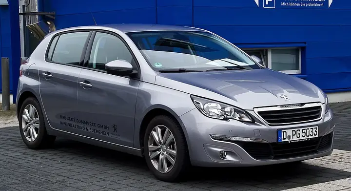
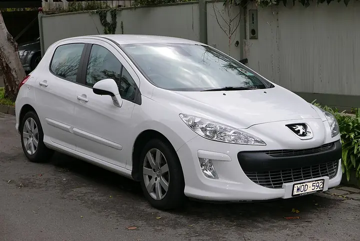

Peugeot 308
Third generation (P5; 2021) · 2021–present
Abstract
This generation of the Peugeot 308 was built September 2021–present in France: Mulhouse (Mulhouse Plant). Body styles: 5-door hatchback, 5-door estate. Layout: Front-engine, front-wheel-drive. Designed by Sébastien Criquet.

_-_081.jpg){kind=link}
Figures of the current version from the manufacturer: Peugeot 308 and 308 SW price list and specifications (France), 2025-09-15.
1Specifications
| Trim levels | StyleAllureGTGT Exclusive |
|---|---|
| Production | September 2021–present |
| Assembly | France: Mulhouse (Mulhouse Plant) |
| Designer | Sébastien Criquet |
| Body style | 5-door hatchback5-door estate |
| Layout | Front-engine, front-wheel-drive |
| Platform | EMP2 V3 |
| Engine | Hybrid:Hybrid 145 ch e-DCS6Plug-in hybrid:Plug-in Hybrid 195 ch e-DCS7Electric:Électrique 156 ch, single-speed |
| Electric motor | Synchronous Electric Motor, 81 kW (308 PHEV)Permanent Magnet Synchronous Motor, 115 kW (e-308) |
| Transmission | 6-speed manual8-speed EAT8 Aisin automatic1-speed direct-drive fixed gear ratio (e-308) |
| Battery | 12.4 kWh (PHEV)54/50 kWh (e-308 gross/net) |
| Electric range | 443–450 km WLTP (hatchback)438–444 km WLTP (SW) |
| Wheelbase | 2670–2730 mm (hatchback)2730 mm (SW) |
| Length | 4360 mm (hatchback)4640 mm (SW) |
| Width | 1850 mm |
| Height | 1440–1460 mm |
| Weight | NNN–NNNN kg |
| Related | Peugeot 408 (crossover)DS 4 (crossover)Opel Astra L |
2Driver assistance
- Drive Assist 2.0 (SAE Level 2, optional, P5): Adaptive cruise control with Stop & Go (automatic gearbox) and lane keeping, plus a semi-automatic lane change on dual carriageways from 70 to 180 km/h. Source: Stellantis Media: Peugeot 308 digital innovations.
3Versions
- Facelift (2025)
4Previous generations

_%E2%80%93_Frontansicht,_4._Januar_2014,_D%C3%BCsseldorf.jpg){kind=link}

_XS_HDi_5-door_hatchback_(2015-07-03)_01.jpg){kind=link}
5Generation by generation
Length +2% from the first to the last
T7 20074,276 mm
T9 20134,253 mm
P5 20214,360 mm